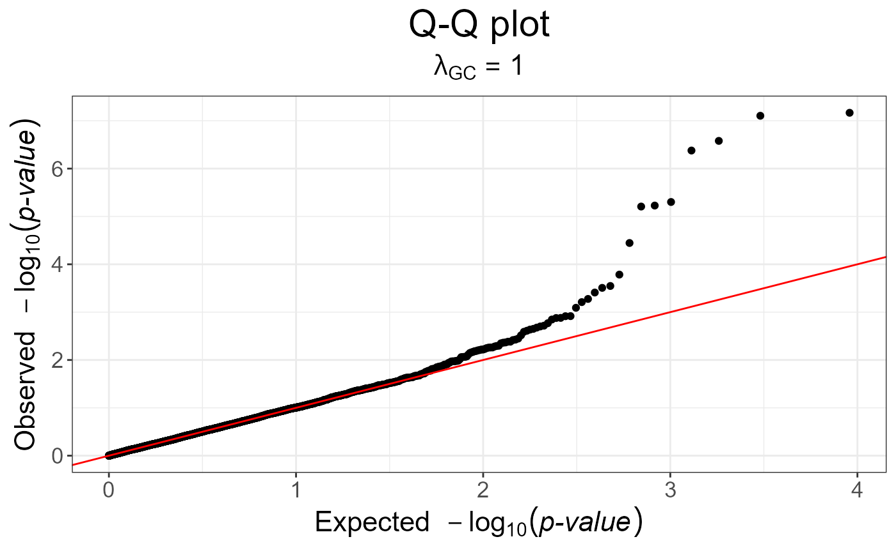

Method to detect genetic markers involved in biological adaptation. This provides a statistical tool for outlier detection based on Principal Component Analysis. This corresponds to the statistic based on mahalanobis distance, as implemented in package pcadapt.
snp_pcadapt( G, U.row, ind.row = rows_along(G), ind.col = cols_along(G), ncores = 1 ) bed_pcadapt( obj.bed, U.row, ind.row = rows_along(obj.bed), ind.col = cols_along(obj.bed), ncores = 1 )
Arguments
| G | A FBM.code256
(typically |
|---|---|
| U.row | Left singular vectors (not scores, \(U^T U = I\))
corresponding to |
| ind.row | An optional vector of the row indices (individuals) that
are used. If not specified, all rows are used. |
| ind.col | An optional vector of the column indices (SNPs) that are used.
If not specified, all columns are used. |
| ncores | Number of cores used. Default doesn't use parallelism. You may use nb_cores. |
| obj.bed | Object of type |
Value
An object of classes mhtest and data.frame returning one
score by SNP. See methods(class = "mhtest").
References
Luu, K., Bazin, E., & Blum, M. G. (2017). pcadapt: an R package to perform genome scans for selection based on principal component analysis. Molecular ecology resources, 17(1), 67-77.
See also
snp_manhattan, snp_qq and snp_gc.
Examples
test <- snp_attachExtdata() G <- test$genotypes obj.svd <- big_SVD(G, fun.scaling = snp_scaleBinom(), k = 10) plot(obj.svd) # there seems to be 3 "significant" components#> Warning: Continuous limits supplied to discrete scale. #> Did you mean `limits = factor(...)` or `scale_*_continuous()`?